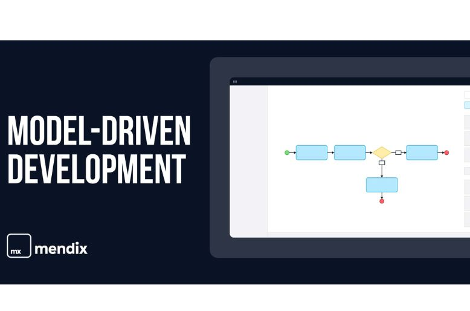

Ficha técnica
Título
Empirical validation of a usability inspection method for model-driven Web development.
Autores
Adrian Fernandez, Silvia Abrahão, Emilio Insfran
Resumen
El artículo analiza la importancia de la usabilidad en las aplicaciones web y presenta una validación empírica de un método de inspección de la usabilidad para el desarrollo web basado en modelos. El Proceso de Evaluación de la Usabilidad Web (WUEP) propuesto pretende integrar las evaluaciones de usabilidad en las primeras fases de los procesos de desarrollo web. El estudio llevó a cabo una serie de experimentos para comparar WUEP con la Evaluación Heurística (HE) en términos de eficacia, eficiencia, facilidad de uso percibida y satisfacción de uso percibida. Los resultados mostraron que WUEP era más eficaz, eficiente y fácil de usar a la hora de detectar problemas de usabilidad en artefactos obtenidos mediante un proceso específico de desarrollo web basado en modelos.
Palabras clave
Usability inspection, Web applications, Model-driven development, Family of experiments.
Enlace artículo
Link de Science Direct del artículo seleccionado.
Cantidad de referencias
El numero total de referencias del artículo es de 17
